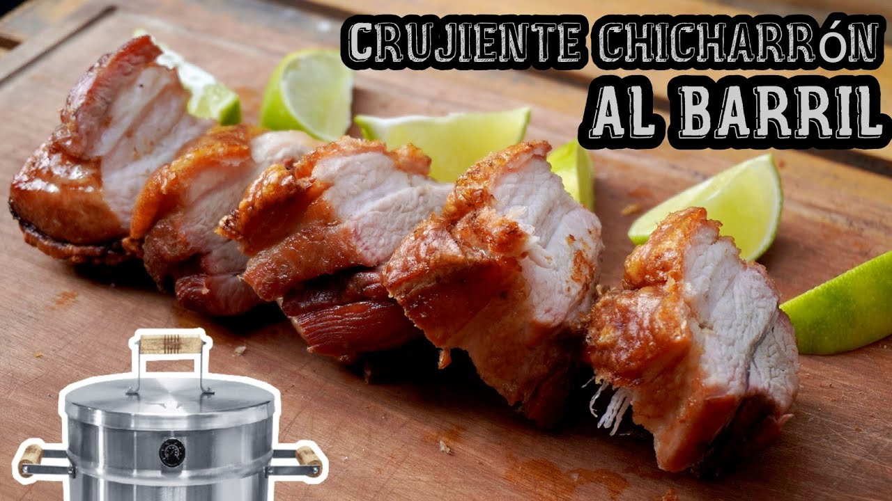

Chicharron al Barril

Ingredientes
- 2kg de Tocineta
- Sal Parrillera
- Pimienta
Preparación
- Hacer cortes al chicharron en la piel en forma horizontal
- Sazonar con sal y pimienta, introducir el gancho del barril en uno de los cortes anteriores para que se sostenga correctamente
- Mientras se hacen los dos primeros pasos, se debe calentar el barril a 180°; una vez caliente, se introduce el chicharron y se deja cocinar por 1 hora y 15 minutos
¡A COMER!
Página principal